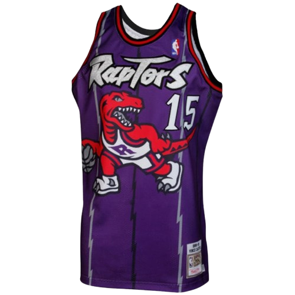
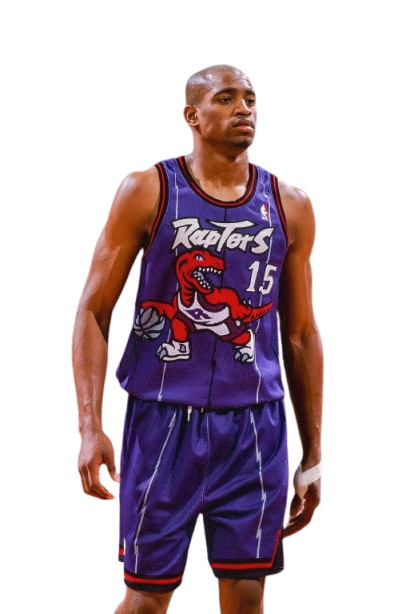

Air Canada.
Quando ele chegou ao norte, o basquete mudou para sempre. A gravidade era apenas uma sugestão para Vince Carter. Ele trouxe estilo, agressividade e uma capacidade atlética que o mundo nunca tinha visto antes.

Carregando Highlights
Quando ele chegou ao norte, o basquete mudou para sempre. A gravidade era apenas uma sugestão para Vince Carter. Ele trouxe estilo, agressividade e uma capacidade atlética que o mundo nunca tinha visto antes.


Continue scrollando para vestir a camisa
O único jogador a atuar em quatro décadas diferentes.
"It's Over!" - A performance mais dominante da história.
O favorito dos fãs por quase uma década inteira.
Colocou o Toronto Raptors no mapa global.
Selecionado pelo Golden State Warriors e imediatamente trocado para Toronto. O destino foi selado.
Campeão do Torneio de Enterradas e Medalha de Ouro Olímpica no mesmo ano. Vince era o rosto da NBA.
Sua camisa #15 é aposentada pelos Raptors. A primeira na história da franquia.